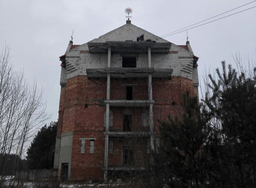
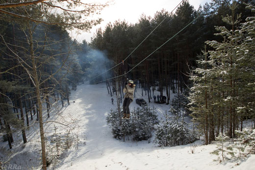

Наши объекты
"Радиаторный" мост (г. Минск)
Пешеходный мост на пересечении ул. Тимирязева и ул. Саперов.
- Координаты: GPS: 53.920007, 27.514722
- Высота на уровне плиты: 11 метров.
- Высота на уровне перил: 12 метров.
- Вид базы: "Маятник".
- Примечание: наш 'Маятник' представляет из себя доработанный "Классический маятник" и не подразумевает так называемого "самоспуска", т.е. Вам не нужны навыки работы со снаряжением для альпинизма. Всю ответственную работу за Вас сделаем мы.
Самый знамениты и излюбленный объект для прыжков в Минске. Для того, чтобы совершить здесь обычный прыжок, от Вас не потребуется никаких знаний и специальной подготовки: система для прыжков сконструирована таким образом, что ни на этапе подготовки, ни на этапе спуска Вам не потребуется совершать никаких сложных и непонятных действий - за Вас все сделаюь организаторы. От Вас потребуется только смелость и решительность, чтобы придти на объект, позволить надеть на Вас специальное снаряжение и (самое главное!!) совершить прыжок.
Заславский замок" (г. Заславль)

Заброшенный долгострой вблизи Заславской развязки.
- Координаты: GPS: 53.990315, 27.308368
- Высота на уровне балкона чердака: 16 метров.
- Высота на уровне балкона 4-го этажа: 12 метров.
- Вид базы: "СУФФ".
- Примечание: Ввиду малой высоты объекта в систему внесено несколько изменений, по этому в данном случае система не является "чичтым СУФФом".
Достаточно интересный объект. Ввиду малой высоты для указанной прыговой базы, приходится высчитывать каждый метр веревки и брать в расчет вес прыгающего. С одной стороны кажется: что здесь может быть интересного? А вот мы тоже так думали... И в итоге с балкона на крыше смогли прыгнуть не все...
В чем вопрос спросите Вы? А в том, что на этом объекте как-то особенно ощущается выстота... Словаит этого не передать.
Помимо этого, данный объект любят еще и поклонника страйкбола. По этому готовьтесь: прыгать может быть придется в реальных "боевых" условиях: под выстрелы и взрывы))) А кто себя будет хорошо вести, тому еще может посчастливиться пострелять из настоящего страйкбольного оружия))
Троллейка (д.Зеленая)

Лесной массив возде ж/д станции "Зеленое" в д. Зеленая.
- Координаты: GPS: 53.977314, 27.298783
- Высота на насыпи: 16 метров.
- Вид базы: "Троллей".
На этом объекте Вы может познакомиться с еще одним интересным видом активного отдыха - c троллеем.
Троллей - это веселый спуск с какого-либо возвышенного объекта по веревочным перилам на специальных блок-роликах. Этот вид развлечения доступен не только отважным и храбрым взрослым, но еще и детям.
Фандоковский мост (г. Бобруйск)
Автомобильный мост через р. Днепр в г. Бобруйск.
- Координаты: GPS: 53.162226, 29.243562
- Средняя высота моста: 25 метров.
- Вид базы: "Диагональная".
Очень приятный объект: нормальная высота - можно полноценно ощутить свободное падение и при этом не совершать титанические усилия для подъема к "экзиту", что позволяет напрыгать вдоволь. Хороший объект для тех, кто напрыгался "маятником" и хочет испытать что-то новое.
Вышка (г. Бобруйск)
Пожарная каланча возле ОАО "Белшина"
- Координаты: GPS: 53.188729, 29.185132
- Высота вышки на уровне площадки: 50 метров.
- Вид базы: "Диагональная".
Самый высокий и самый интересный объект в нашей коллекции. Объект для тех, кто уже освоил более легкие объекты. Сложность данного объекта заключается в том, что на него нужно забраться по сплошной отвесной леснице, что для неподготовленного человека может занять около 5 минут, которые по ощущениям растягиваются на 5 часов в процессе подъема))
Зато для тех, кто решился и достиг площадки открывается неповторимый вид на город и еще боллее восхитительные впечатления от прыжка.
"Кленковский" мост (г. Гомель)
Ж/д мост через р. Сож между станциями "Кленки" и "Плесы"
- Координаты: GPS: 52.453780, 31.076251
- Высота на уровне средней фермы: 35 метров.
- Высота на уровне боковых ферм: 25 метров.
- Высота на уровне перекрытия моста: 15 метров.
- Вид базы: На любой вкус))
Самый знаменитый и самый популярный мост среди роупджамперов. Его конструкция позволяет совершать прыжки разного уровня: как по высоте, так и по исполнению! На этом мосту может работать сразу несколько команд и при этом совсем не мешать друг другу. Единственное, что может мешать - это проходящие поезда. По этому в обязанность организаторов входит контроль за тем, чтобы все гости своевремнно освобождали пути.
Именно здесь ежегодно кадые крайние выходные июля проходит неофициальный RopeJumpingFest под рабочим названием "ГомельФэст" - традиционная встреча поклонников этого вида отдыха (как команд, так и тех, кто приходит просто попрыгать), на которой можно делиться опытом и удивляют друг друга своими наработками.
Ваши отзывы
Если вдруг после прыжка Вы хотели поделиться своими впечатлениями либо выразить свою благодарность организаторам, но Вас переполняли эмоции и не находилось подходящих слов, то у Вас есть второй шанс...
Поделиться впечатлениями


{kind=link}